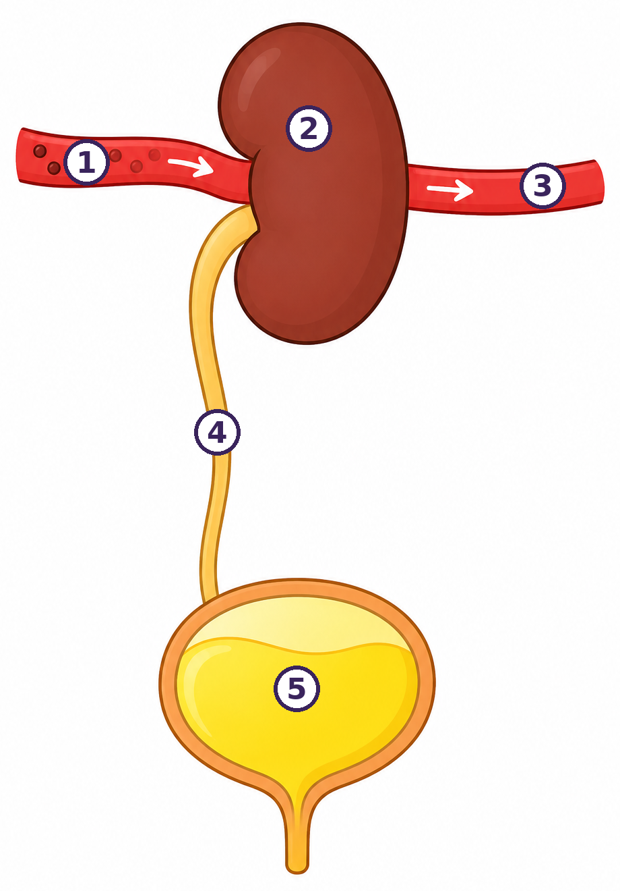

Esbossa un cos i marca per on creus que el cos elimina la urea, les sals i l'aigua que sobren. Al final ho compararàs amb el model real.
① Quan et poses nerviós/osa o t'espantes, el cor s'accelera sense que tu li diguis res. Per quina raó creus que passa?
Comença així si vols: «Crec que el cor s'accelera perquè…» / «Crec que el color de l'orina canvia perquè…»
② La teva orina té sempre el mateix color? Per quina raó creus que alguns dies és molt clara i d'altres molt fosca?
③ El CO₂ ja saps per on surt: pels pulmons. Però les teves cèl·lules també fabriquen residus líquids (urea, sals, excés d'aigua). Per on creus que surten del cos?
Qui fa de parella subjecta el regle pel 30 i el deixa caure sense avisar. Tu tanques la mà tan de pressa com puguis. Anota en quin número l'has agafat: aquells centímetres són el temps que ha trigat el senyal a anar de l'ull al cervell i del cervell als dits.
| Distància caiguda | 5 cm | 10 cm | 15 cm | 20 cm | 25 cm | 30 cm |
|---|---|---|---|---|---|---|
| Temps de reacció | 101 ms | 143 ms | 175 ms | 202 ms | 226 ms | 247 ms |
Fes servir la taula de dalt per passar els cm a mil·lisegons. Si el teu valor queda entremig, tria el més proper.
| Mà dominant · cm | Mà dominant · ms | L'altra mà · cm | L'altra mà · ms | |
|---|---|---|---|---|
| Prova 1 | ||||
| Prova 2 | ||||
| Prova 3 | ||||
| Prova 4 | ||||
| Prova 5 |
Cada persona del grup fa un paper i es passa la pilota en l'ordre correcte: receptor (la pell del peu) · nervi que puja · medul·la espinal · nervi que baixa · efector (el múscul que retira el peu).
L'ordre fa aquest camí: (el peu) → nervi que puja → → nervi que baixa → (el múscul).
Amb les targetes de la taula, encaixa cada hormona amb la seva glàndula, la situació en què apareix i l'efecte que provoca. Copia el resultat aquí:
| Hormona | Quina glàndula la fabrica | En quina situació | Quin efecte té |
|---|---|---|---|
| Adrenalina | glàndula suprarenal | t'espantes / esprintes | puja la FC, obre els bronquis, frena la digestió |
| Insulina | |||
| ADH | |||
| EPO |
La primera fila ja està feta: és el model. Les targetes de la taula del grup et donen les altres.
Dades amb finalitat didàctica. Fixa't en les dues files noves: urea i creatinina — els residus que filtra el ronyó.
| Paràmetre | Valor del Marc | Valors normals | Què mesura | És normal? |
|---|---|---|---|---|
| Glucosa | 88 mg/dL | 70 – 100 | energia de les cèl·lules | normal / no |
| Hemoglobina (Hb) | 9,2 g/dL | 13 – 17 | transporta l'O₂ → poca = anèmia | normal / no |
| Ferritina | 8 ng/mL | 30 – 400 | reserva de ferro del cos | normal / no |
| Urea | 32 mg/dL | 17 – 49 | residu de les proteïnes — el filtra el ronyó | normal / no |
| Creatinina | 0,9 mg/dL | 0,7 – 1,3 | residu del múscul — diu si el ronyó filtra bé | normal / no |
El color de les files només serveix per llegir-la millor: rosa = per sota del normal, verd = dins del normal. Verd NO vol dir «alerta».
👁️ OBSERVO
Els dos valors que el Marc té per sota del normal són l' i la .
❓ EM PREGUNTO
🔗 CONNECTO
✅ DEDUEIXO
El ronyó del Marc funciona . El que li falta és , i per això té poca hemoglobina.
El cos té dues maneres de donar ordres:
⚡ Pels nervis: com un cable elèctric. Va molt de pressa: mil·lisegons (menys d'un parpelleig). L'ordre arriba i s'acaba de seguida.
🩸 Per les hormones: són missatgers que viatgen per la sang. Triguen més (segons o minuts), però l'efecte dura molt.
Quan t'espantes, primer arriba l'ordre pel nervi (el cor s'accelera de cop) i després arriba l'adrenalina per la sang, que et manté accelerat una bona estona.
| Via NERVIOSA | Via HORMONAL | |
|---|---|---|
| Per on viatja | pel nervi (elèctric) | |
| Quant triga | ||
| Un exemple |
La primera casella ja està feta: és el model.

① sang que ARRIBA, amb residus (els puntets foscos són la urea) · ② ronyó · ③ sang que SURT, ja filtrada · ④ urèter · ⑤ bufeta
⚠️ Compte amb la paraula «neta»: aquí vol dir sense urea, no amb oxigen. A les sessions del cor, «sang bruta» volia dir sang sense oxigen — no és el mateix. Al dibuix les dues canonades són vermelles justament per això.
Al dibuix n'hi ha un, però en tens dos, un a cada costat de la columna.
Les cèl·lules, quan treballen, fan residus. El més important és la urea (ve de les proteïnes). La urea va a la sang. Si s'acumula, és un verí. El ronyó neteja la sang: agafa la urea, les sals i l'aigua que sobren i fa l'orina.
L'orina surt del ronyó, baixa per un tub que es diu urèter i s'acumula a la bufeta. Quan la bufeta és plena, vas al lavabo.
La sang amb residus entra al , que la filtra. La sang filtrada torna al cos i el que sobra forma l'.
L'orina surt del ronyó per un tub, el , i s'acumula a la .
El cos treu els residus per dues portes:
🫁 Els pulmons treuen el CO₂ (un gas).
🫘 El ronyó treu la urea, les sals i l'aigua que sobren (un líquid: l'orina).
Escriu cada residu a la columna que li toca:
| 🫁 Surt pels PULMONS | 🫘 Surt pel RONYÓ |
|---|---|

Esquerra (ADH): el cervell envia el senyal de l'ADH al ronyó → el ronyó no deixa marxar l'aigua i la torna a la sang (fletxa blava) → surt poca orina.
Dreta (EPO): el ronyó envia el senyal de l'EPO a l'interior de l'os — la medul·la òssia — → allà es fabriquen eritròcits (glòbuls vermells) nous → van a la sang.
Quan beus poca aigua, el cos no en vol perdre. Una hormona, l'ADH, mana al ronyó que retingui aigua. Llavors fas poca orina i és més fosca. Quan beus molt, passa el contrari: molta orina i ben clara.
La Júlia ha begut 2 litres d'aigua. El Pau no ha begut res des del matí i ha jugat a bàsquet.
Acaba la frase: si el Pau ara beu un litre d'aigua, la seva ADH i la seva orina es tornarà .
El ronyó també fabrica una hormona, l', que mana fabricar (glòbuls vermells) dins de l'os.
Per això una persona amb el ronyó malalt pot tenir , encara que mengi prou .
Aquestes quatre caselles formen un cercle. Escriu-hi el que falta:
1r · Bec aigua → 2n · puja l' → 3r · el ronyó aigua → 4t · l'aigua de la sang torna a estar .
Mantenir estable el medi intern d'aquesta manera es diu homeòstasi.
👁️ OBSERVO
🔗 CONNECTO
✅ DEDUEIXO
El ronyó del Marc està . La seva anèmia ve de la falta de .
Acaba la frase: «Els donava avantatge perquè amb més oxigen els músculs poden…»
Durant un dia, observa la relació entre el que beus i la teva orina. Apunta-ho aquí:
| Moment del dia | Quants gots d'aigua he begut des de l'anterior | Color de l'orina (clara / mitjana / fosca) |
|---|---|---|
| Al llevar-te | ||
| Migdia | ||
| Tarda | ||
| Abans de dormir | ||
Quina conclusió en treus sobre com el teu ronyó regula l'aigua del cos?
Per començar: compara les dues columnes. Quan la columna dels gots té un número petit, què li passa a la columna del color?
⚠️ Porta aquesta fitxa a la Sessió 7 — i no t'oblidis les dades de freqüència cardíaca en repòs dels 3 matins que vas mesurar la sessió passada: les necessitaràs. ⏱️ 1 min cada cop · No es pot fer amb IA: són observacions teves del teu propi cos.